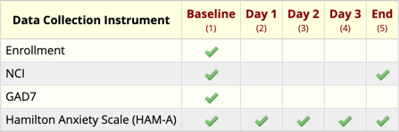

REDCap exports longitudinal projects with one record (a line of data) per assessment (typically 1 line per day). This works well when every instrument/questionnaire is given at every assessment, but for projects that have different instruments/questionnaires given on different days, REDCap exports empty values (represented by the value NA in R).
Example: In the Nachos for Anxiety project, three instruments were used; they each had a different administration schedule. Subjects’ anxiety was assessed at baseline with the Generalized Anxiety Disorder 7-item (GAD-7) scale. Every day, it was assessed with the Hamilton Anxiety Scale (HAM-A), but the Nacho Craving Index was administered only at the baseline and at the end of the study (see the figure below for clarification).

The instruments that are not assessed every day appear as entirely blank questionnaires when the data is exported. For example, values from the NCI instrument are shown as missing for the Day 1, Day 2, and Day 3 (because it was not administered during those visits).
In R, this data is displayed as
redcap <- readRDS(file = "./redcap_nacho_anxiety.rds")
redcap %>%
select(
# Select these two columns
record_id, redcap_event_name,
# And also select all columns between "nachos" and "nci_complete"
nachos:nci_complete
) %>%
# Make the table pretty
knitr::kable()| record_id | redcap_event_name | nachos | treat | treating | othercondition | last | traveled | miles | now | strong | ingredients___1 | ingredients___2 | ingredients___3 | ingredients___4 | ingredients___5 | ingredients___6 | ingredients___7 | ingredients___8 | cheese | crunch | bean | guacamole | jalapeno | meat | life | nci_complete |
|---|---|---|---|---|---|---|---|---|---|---|---|---|---|---|---|---|---|---|---|---|---|---|---|---|---|---|
| 1 | baseline_arm_1 | Yes | TRUE | Other | Anxiety | I ate nachos in the last year. | Yes | 3115 | Yes | 74 | Checked | Checked | Unchecked | Checked | Checked | Checked | Checked | Checked | 5 Love it | 5 Love it | 5 Love it | 5 Love it | 5 Love it | 5 Love it | They helped me cure my hunger. | Complete |
| 1 | day_1_arm_1 | NA | NA | NA | NA | NA | NA | NA | NA | NA | NA | NA | NA | NA | NA | NA | NA | NA | NA | NA | NA | NA | NA | NA | NA | NA |
| 1 | day_2_arm_1 | NA | NA | NA | NA | NA | NA | NA | NA | NA | NA | NA | NA | NA | NA | NA | NA | NA | NA | NA | NA | NA | NA | NA | NA | NA |
| 1 | day_3_arm_1 | NA | NA | NA | NA | NA | NA | NA | NA | NA | NA | NA | NA | NA | NA | NA | NA | NA | NA | NA | NA | NA | NA | NA | NA | NA |
| 1 | end_arm_1 | Yes | TRUE | Other | Anxiety | I am currently eating nachos. | Yes | 3115 | Yes | 90 | Checked | Checked | Checked | Checked | Checked | Checked | Checked | Checked | 5 Love it | 5 Love it | 5 Love it | 5 Love it | 5 Love it | 5 Love it | They make me feel happy. | Complete |
It is often useful to make a different data table which has the values for each questionnaire without the blank records.
The redcapAPI package can be used to load data directly into R. To learn more about it, take a look here. Normally the code to automatically pull data with an API includes a person’s secret code “key”. Because I want to keep this hidden, I have hidden this API key in my user profile and the code below includes a call to Sys.getenv() to grab the key. To learn more about working with APIs, look here. Also notice that the data is saved using the saveRDS() function. REDCap data loaded with the API has the variable labels added as an extra attribute. To allow this vignette to run without sharing my secret key, I have saved the data to the package website.
rcon <- redcapAPI::redcapConnection(
url = 'https://redcap.miami.edu/api/',
token = Sys.getenv("nacho_anxiety_Key")
)
redcap_nacho_anxiety <- redcapAPI::exportRecords(rcon)
saveRDS(redcap_nacho_anxiety, file = "redcap_nacho_anxiety.rds")
Pass the make_instrument() function the name of a dataset and the names of the first and last variables in an instrument and it will return a table that has the non-empty records for the instrument. For example, to extract the enrollment/consent instrument:
make_instrument(redcap, "concented", "enrollment_complete") %>%
knitr::kable()| record_id | redcap_event_name | concented | enrollment_complete |
|---|---|---|---|
| 1 | baseline_arm_1 | Yes | Complete |
To extract nacho craving information:
make_instrument(redcap, "nachos", "nci_complete") %>%
knitr::kable()| record_id | redcap_event_name | nachos | treat | treating | othercondition | last | traveled | miles | now | strong | ingredients___1 | ingredients___2 | ingredients___3 | ingredients___4 | ingredients___5 | ingredients___6 | ingredients___7 | ingredients___8 | cheese | crunch | bean | guacamole | jalapeno | meat | life | nci_complete | |
|---|---|---|---|---|---|---|---|---|---|---|---|---|---|---|---|---|---|---|---|---|---|---|---|---|---|---|---|
| 1 | 1 | baseline_arm_1 | Yes | TRUE | Other | Anxiety | I ate nachos in the last year. | Yes | 3115 | Yes | 74 | Checked | Checked | Unchecked | Checked | Checked | Checked | Checked | Checked | 5 Love it | 5 Love it | 5 Love it | 5 Love it | 5 Love it | 5 Love it | They helped me cure my hunger. | Complete |
| 5 | 1 | end_arm_1 | Yes | TRUE | Other | Anxiety | I am currently eating nachos. | Yes | 3115 | Yes | 90 | Checked | Checked | Checked | Checked | Checked | Checked | Checked | Checked | 5 Love it | 5 Love it | 5 Love it | 5 Love it | 5 Love it | 5 Love it | They make me feel happy. | Complete |
To make an analysis dataset containing the NCI values without the subject ID and the event name:
make_instrument(
redcap,
"nachos", "nci_complete",
drop_which_when = TRUE
) %>%
knitr::kable()| nachos | treat | treating | othercondition | last | traveled | miles | now | strong | ingredients___1 | ingredients___2 | ingredients___3 | ingredients___4 | ingredients___5 | ingredients___6 | ingredients___7 | ingredients___8 | cheese | crunch | bean | guacamole | jalapeno | meat | life | nci_complete | |
|---|---|---|---|---|---|---|---|---|---|---|---|---|---|---|---|---|---|---|---|---|---|---|---|---|---|
| 1 | Yes | TRUE | Other | Anxiety | I ate nachos in the last year. | Yes | 3115 | Yes | 74 | Checked | Checked | Unchecked | Checked | Checked | Checked | Checked | Checked | 5 Love it | 5 Love it | 5 Love it | 5 Love it | 5 Love it | 5 Love it | They helped me cure my hunger. | Complete |
| 5 | Yes | TRUE | Other | Anxiety | I am currently eating nachos. | Yes | 3115 | Yes | 90 | Checked | Checked | Checked | Checked | Checked | Checked | Checked | Checked | 5 Love it | 5 Love it | 5 Love it | 5 Love it | 5 Love it | 5 Love it | They make me feel happy. | Complete |